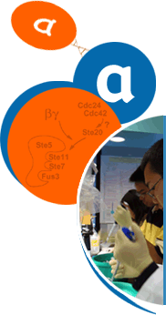

 |
FAQs This summer the Molecular Sciences Institute took on five interns; Lakeysha, Chris, Omar, Xiao-Yu, and Allison. They all recently completed their junior or senior year in high school. MSI also hired a recent UC Berkeley graduate, Irene Wong, to assist the interns. During the interns' first two weeks at MSI they worked with Dr. Michael Gonzales, who taught them how to navigate through the maze of online databases and to use a 3D protein modeling program called Rasmol. As a "test", the interns were asked to diagram the yeast pheromone-response pathway with only the help of the internet. The interns began working in the wet lab during their third week. Each intern was assigned a protein in the pheromone-response pathway to experiment with for the remainder of the time. Their tasks were to find the optimum induction conditions (IPTG concentration, temperature, time) and to ultimately purify enough protein for crystallization experiments. In the process, the interns learned valuble procedures such as running protein gels, liquid nitrogen freeze-thaws, sonication, nickel purification columns, Western blots, and ion-exchange columns. Their experience culminated in a presentation to the researchers at MSI. |